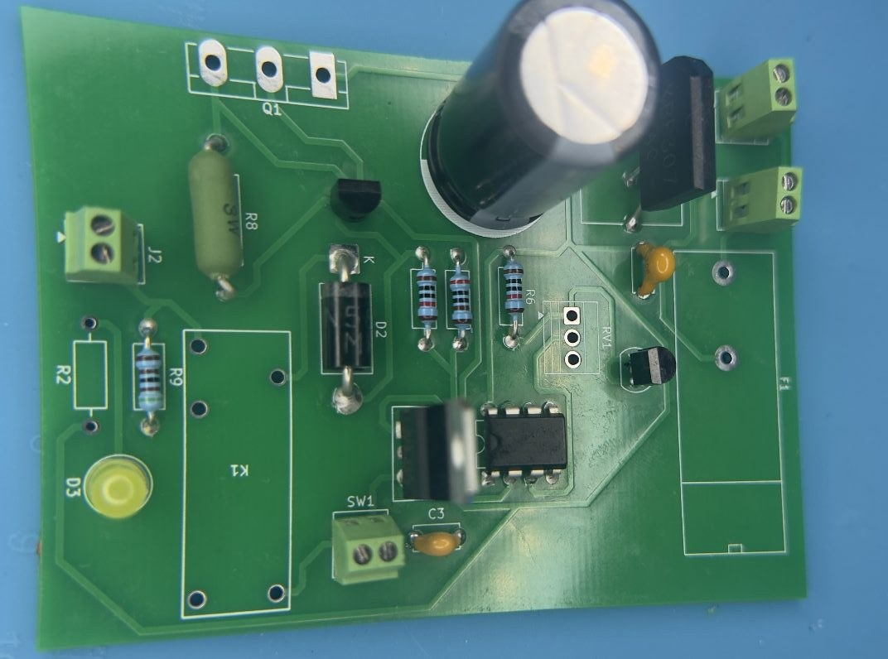

0–15V Adjustable Linear Bench Power Supply
A linear regulated power supply designed from calculations through LTspice simulation, KiCad schematic and PCB layout, and a custom enclosure — boards are soldered and I'm waiting on the last parts to arrive before final bring-up and testing.
Click below to see the steps and flip cards →

Calculations & Part Selection
I worked backward from the target specs — 0–15 V output, up to 1.2 A, and ripple under 50 mV — through the rectifier, filter, and regulation stages to size the components. This meant selecting a transformer secondary with enough voltage for dropout and ripple margin, a bridge rectifier rated above the load current, and a 2200 µF filter capacitor sized to meet the ripple target. I simulated the rectifier and filter stage in LTspice to confirm the ripple shape before finalizing the components. The full math is in the linked PDF below.
LTspice Simulation — Full Circuit & Protection
After validating the rectifier and filter, I simulated the complete circuit in LTspice, including the regulation stage, both pass transistors, current limiting, and relay protection. With the potentiometer turned fully clockwise, the simulated output held at 15 V, matching the calculations. I also tested the protection circuit separately, confirming that the current-limiting stage capped the output current in the 0.1–1 A range and that the relay would cut power under a fault condition.
Final KiCad Schematic
Once the LTspice simulation matched the calculations, I rebuilt the circuit as a full KiCad schematic. I added the front-panel connections for the banana jacks, power switch, fuse, and status LED, along with the L7805 for auxiliary low-voltage needs. I then simulated the circuit again in KiCad to make sure the design behaved as expected before moving to PCB layout.
PCB Layout
I then moved the component footprints onto the PCB and routed the 2-layer layout. I kept the high-current path from the bridge rectifier through the filter capacitor and pass transistors wide enough for 1.2 A. I also placed the front-panel connectors (J1, J2, SW1, SW3) along the board edges so they would line up with their positions in the enclosure.
Fabricated PCB
The fabricated board came back matching the KiCad layout, with silkscreen labels for each component reference (F1, D1, C1, U1, K1, and the rest) placed to match the schematic before any components went on.
Enclosure Design — Mounting Plates
I used aluminum plates to mount the heatsink and transformer directly, surrounded by a wood frame for the rest of the housing — aluminum where I needed heat dissipation and rigid mounting, and wood everywhere else for ease of building.
Front & Back Panel Assembly
On the front panel I mounted the switches and output potentiometer where they would be accessible during use. On the back panel, the IEC power cord's switch wiring connects directly to the transformer, keeping the AC input wiring toward the back of the enclosure and away from the front controls.
Soldering & Waiting on Parts
I hand-soldered the components I had available onto the board. I'm currently waiting on the rest of the parts to arrive before finishing the remaining soldering and powering it up for testing.